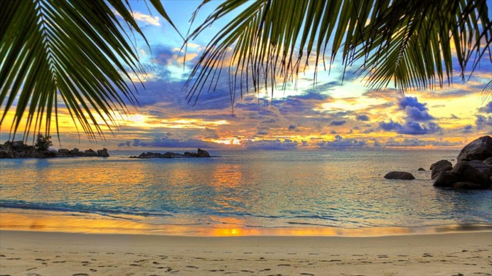
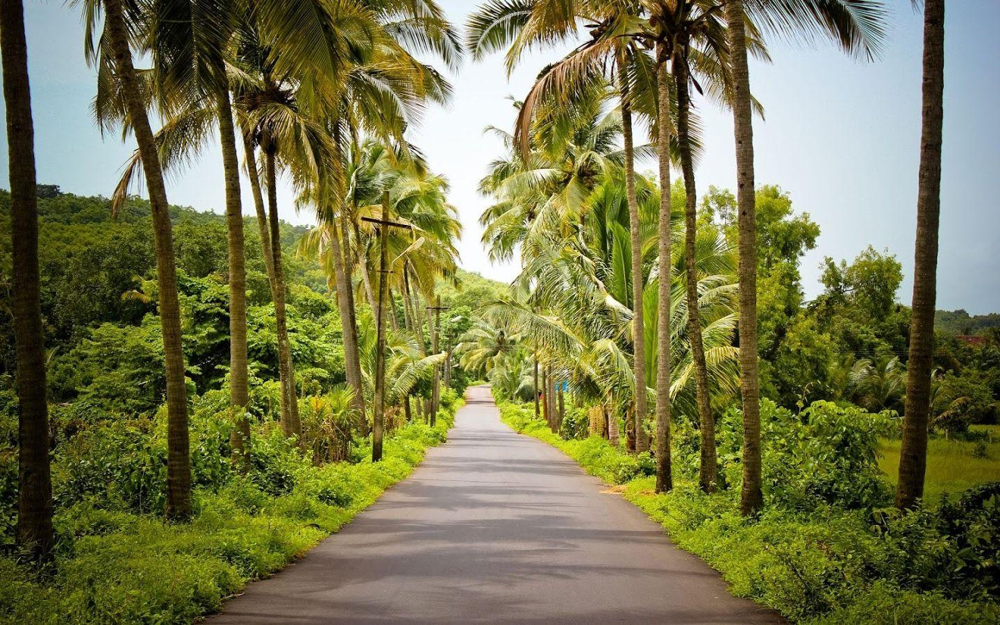
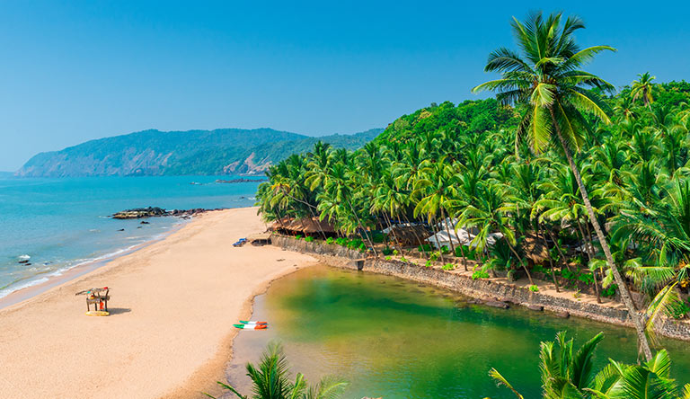
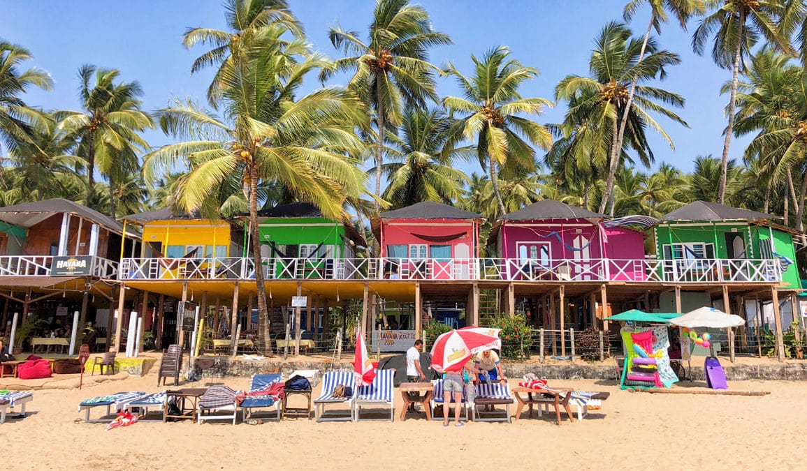

GOA THE PEARL OF ORIENT. HAS SOMETHING SPECIAL THAT ATTRACTS THE VISITORS FROM ALL OVER THE WORLD. IT HAS THE FASCINATING NATURAL BEAUTY
THAT MIGHT BE UNKNOWN TO SOME PEOPLE.
THIS SITE IS BUILT TO REPRESENT THE BEAUTY OF GOA INTO WORDS AND ILLUSTRIATIONS.
LET'S EXPLORE THE BEAUTY OF GOA


BRIEF-UP ABOUT GOA
Goa is a state in western India with coastlines stretching along the Arabian Sea. Its long history as a Portuguese colony prior to 1961 is evident in its preserved 17th-century churches and the area’s tropical spice plantations. Goa is also known for its beaches, ranging from popular stretches at Baga and Palolem to those in laid-back fishing villages such as Agonda.


HISTORY OF GOA
PRE-HISTORY:
Rock art engravings found in Goa are the earliest known traces of human life in India. Goa, situated within the Shimoga-Goa Greenstone Belt in the Western Ghats (an area composed of metavolcanics, iron formations and ferruginous quartzite), yields evidence for Acheulean occupation. Rock art engravings (petroglyphs) are present on laterite platforms and granite boulders in Usgalimal near the west flowing Kushavati river and in Kajur. In Kajur, the rock engravings of animals, tectiforms and other designs in granite have been associated with what is considered to be a megalithic stone circle with a round granite stone in the centre. Petroglyphs, cones, stone-axe, and choppers dating to 10,000 years ago have been found in various locations in Goa, including Kazur, Mauxim, and the Mandovi-Zuari basin.[20] Evidence of Palaeolithic life is visible at Dabolim, Adkon, Shigao, Fatorpa, Arli, Maulinguinim, Diwar, Sanguem, Pilerne, and Aquem-Margaon. Difficulty in carbon dating the laterite rock compounds poses a problem for determining the exact time period.
Early Goan society underwent radical change when Indo-Aryan and Dravidian migrants amalgamated with the aboriginal locals, forming the base of early Goan culture.
EARLY PERIOD OF HISTORY:
In the 3rd century BC, Goa was part of the Maurya Empire, ruled by the Buddhist emperor, Ashoka of Magadha. Buddhist monks laid the foundation of Buddhism in Goa. Between the 2nd century BC and the 6th century AD, Goa was ruled by the Bhojas of Goa. Chutus of Karwar also ruled some parts as feudatories of the Satavahanas of Kolhapur (2nd century BC to the 2nd century AD), Western Kshatrapas (around 150 AD), the Abhiras of Western Maharashtra, Bhojas of the Yadav clans of Gujarat, and the Konkan Mauryas as feudatories of the Kalachuris. The rule later passed to the Chalukyas of Badami, who controlled it between 578 and 753, and later the Rashtrakutas of Malkhed from 753 to 963. From 765 to 1015, the Southern Silharas of Konkan ruled Goa as the feudatories of the Chalukyas and the Rashtrakutas. Over the next few centuries, Goa was successively ruled by the Kadambas as the feudatories of the Chalukyas of Kalyani. They patronised Jainism in Goa.
In 1312, Goa came under the governance of the Delhi Sultanate. The kingdom's grip on the region was weak, and by 1370 it was forced to surrender it to Harihara I of the Vijayanagara empire. The Vijayanagara monarchs held on to the territory until 1469, when it was appropriated by the Bahmani sultans of Gulbarga. After that dynasty crumbled, the area fell into the hands of the Adil Shahis of Bijapur, who established as their auxiliary capital the city known under the Portuguese as Velha Goa (or Old Goa)
PORTUGUESE PERIOD :
In 1510, the Portuguese defeated the ruling Bijapur sultan Yusuf Adil Shah with the help of a local ally, Timoji, a privateer. They set up a permanent settlement in Velha Goa. This was the beginning of Portuguese colonial rule in Goa that would last for four and a half centuries, until its annexation to India in 1961. The Goa Inquisition, a formal tribunal, was established in 1560, and was finally abolished in 1812.
From the latter decades of the eighteenth century, the territory of Goa was composed of two segments: the central nucleus of the Velhas Conquistas (Old Conquests) - Bardez, Ilhas of Tiswadi, and Salsete), these territories had been under Portuguese administration since the sixteenth century; and the Novas Conquistas (New Conquests) - Bicholim, Canacona, Pernem, Quepem, Sattari, Sanguem - territories which had been successively added through the eighteenth century.
In 1843, the Portuguese moved the capital to the Cidade da Nova Goa, today known as Panaji, from Velha Goa. By the mid-18th century, Portuguese Goa had expanded to most of the present-day state limits. Simultaneously, the Portuguese lost other possessions in India until their borders stabilized and formed the Estado da Índia Portuguesa or State of Portuguese India.
CONTEMPORY PERIOD :
After India gained independence from British rule in 1947, India requested that Portuguese territories on the Indian subcontinent be ceded to India. Portugal refused to negotiate on the sovereignty of its Indian enclaves. On 19 December 1961, the Indian Army invaded with Operation Vijay resulting in the annexation of Goa, and of Daman and Diu islands into the Indian union. Goa, along with Daman and Diu, was organised as a centrally administered union territory of India. On 16 January, 1967 a referendum was held in Goa, to decide the future of the Union Territory of Goa, Daman and Diu. It was the only referendum to have been held in independent India. The referendum offered the people of Goa a choice between continuing as a union territory or merging with the state of Maharashtra and the majority chose the former. On 30 May 1987, the union territory was split, and Goa was made India's twenty-fifth state, with Daman and Diu remaining a union territory.
DEMOGRAPHICS:
A native of Goa is called a Goan. As per projection, population of Goa in 2021 is 15.28 Lakhs, making it India's fourth smallest (after Sikkim, Mizoram and Arunachal Pradesh). There are currently 394 people for each square kilometre of land which is higher than national average 382 per km2. Goa is the state with highest proportion of urban population with 49.8% of the population living in urban areas. The sex ratio is 956 females to 1,000 males. The birth rate is 12.4 per 1,000 people in 2018. Goa also is the state with lowest proportion of Scheduled Tribes at 0.04%. Estimates put the migrant, or non-Goan Indian origin, population at over 40% of the resident population, Goa is virtually standing on the brink of 'ethnic dilution' as unrestricted migration from other states is threatening to reduce the native population to an 'alienated microscopic minority' by 2021, according to an assessment by the state government.
GEOGRAPHY:
Goa encompasses an area of 3,702 km2 (1,429 sq mi). It lies between the latitudes 14°53′54″ N and 15°40′00″ N and longitudes 73°40′33″ E and 74°20′13″ E.
Goa is a part of the coastal country known as the Konkan, which is an escarpment rising up to the Western Ghats range of mountains, which separate it from the Deccan Plateau. The highest point is the Sonsogor, with an altitude of 1,167 metres (3,829 ft). Goa has a coastline of 160 km (99 mi).
Goa's seven major rivers are the Zuari, Mandovi, Terekhol, Chapora, Galgibag, Kumbarjua canal, Talpona and the Sal. The Zuari and the Mandovi are the most important rivers, interspaced by the Kumbarjua canal, forming a major estuarine complex.These rivers are fed by the Southwest monsoon rain and their basin covers 69% of the state's geographical area. These rivers are some of the busiest in India. Goa has more than 40 estuarine, eight marine, and about 90 riverine islands. The total navigable length of Goa's rivers is 253 km (157 mi). Goa has more than 300 ancient water-tanks built during the rule of the Kadamba dynasty and over 100 medicinal springs.
The Mormugao harbour on the mouth of the River Zuari is one of the best natural harbours in South Asia.
Most of Goa's soil cover is made up of laterites rich in ferric-aluminum oxides and reddish in colour. Further inland and along the riverbanks, the soil is mostly alluvial and loamy. The soil is rich in minerals and humus, thus conducive to agriculture. Some of the oldest rocks in the Indian subcontinent are found in Goa between Molem and Anmod on Goa's border with Karnataka. The rocks are classified as Trondjemeitic Gneiss estimated to be 3,600 million years old, dated by rubidium isotope dating. A specimen of the rock is exhibited at Goa University.
CLIMATE:
Goa features a tropical monsoon climate under the Köppen climate classification. Goa, being in the tropical zone and near the Arabian Sea, has a hot and humid climate for most of the year. The month of May is usually the hottest, seeing daytime temperatures of over 35 °C (95 °F) coupled with high humidity. The state's three seasons are Southwest monsoon period (June – September), post-monsoon period (October – January), and pre-monsoon period (February – May). Over 90% of the average annual rainfall (120 inches) is received during the monsoon season.
SUBDIVISIONS OF GOA :
The state is divided into two districts: North Goa and South Goa. Each district is administered by a district collector, appointed by the Indian government.
Panaji is the headquarters of North Goa district and is also the capital of Goa.
North Goa is further divided into three subdivisions – Panaji, Mapusa, and Bicholim; and five talukas (subdistricts) – Tiswadi/Ilhas de Goa (Panaji), Bardez (Mapusa), Pernem, Bicholim, and Sattari (Valpoi).
THERE ARE 248 VILLAGES IN NORTH GOA
Margao is the headquarters of South Goa district.
South Goa is further divided into five subdivisions – Ponda, Mormugao-Vasco, Margao, Quepem, and Dharbandora; and seven talukas – Ponda, Mormugao, Salcete (Margao), Quepem, and Canacona (Chaudi), Sanguem, and Dharbandora. (Ponda taluka was shifted from North Goa to South Goa in January 2015).
THERE ARE 163 VILLAGES IN SOUTH GOA
Goa's major cities include Panaji, Margao, Vasco, Mapusa, Ponda, Bicholim, and Valpoi.
Panaji has the only Municipal Corporation in Goa.
There are thirteen Municipal Councils: Margao, Mormugao (including Vasco), Pernem, Mapusa, Bicholim, Sanquelim, Valpoi, Ponda, Cuncolim, Quepem, Curchorem, Sanguem, and Canacona. Goa has a total number of 334 villages.
POLITICS HISTORY OF GOA :
The politics of Goa are a result of the uniqueness of this region due to 450 years of Portuguese rule, in comparison to three centuries of British rule experienced by the rest of India. The Indian National Congress was unable to achieve electoral success in the first two decades after the State's incorporation into India.Instead, the state was dominated by the regional political parties like Maharashtrawadi Gomantak Party and the United Goans Party.
GOVERNMENT:
In the Parliament of India, Goa has two seats in the Lok Sabha (House of the People) The lower house of the Indian Parliament, one representing each district, and one seat in the Rajya Sabha (Council of the States) The Upper House of the Indian Parliament.
Goa's administrative capital is Panaji in English, Panjim also spelt as Pangim in Portuguese, and Ponjê in the local language. It lies on the left bank of the Mandovi river. The seat of the Goa Legislative Assembly is in Porvorim, across the Mandovi from Panaji. As the state comes under the Bombay High Court, Panaji has a bench in it. Unlike other states, which follow the model of civil laws framed for individual religions introduced in the days of Raj, the Portuguese Goa civil code, a uniform code based on the Napoleonic code, has been retained in Goa.
Goa has a unicameral legislature, the Goa Legislative Assembly, of 40 members, headed by a speaker. The Chief Minister heads the executive, which is made up of the party or coalition elected with a majority in the legislature. The Governor, the head of the state, is appointed by the President of India. After having stable governance for nearly thirty years up to 1990, Goa is now notorious for its political instability having seen fourteen governments in the span of the fifteen years between 1990 and 2005.[40]
In March 2005, the assembly was dissolved by the Governor and President's Rule was declared, which suspended the legislature. A by-election in June 2005 saw the Indian National Congress coming back to power after winning three of the five seats that went to polls. The Congress Party and the Bharatiya Janata Party (BJP) are the two largest parties in the state. In the assembly poll of 2007, the INC-led coalition won and formed the government.[41] In the 2012 Vidhan Sabha Elections, the Bharatiya Janata Party along with the Maharashtrawadi Gomantak Party won a clear majority, forming the new government with Manohar Parrikar as the Chief Minister. Other parties include the United Goans Democratic Party, the Nationalist Congress Party.[42]
In the 2017 assembly elections, the Indian National Congress gained the most seats, with the BJP coming in second. However, no party was able to gain a majority in the 40 member house. The BJP was invited to form the Government by Governor Mridula Sinha. The Congress claimed the use of money power on the part of the BJP and took the case to the Supreme Court. However, the Manohar Parikkar led Government was able to prove its majority in the Supreme Court mandated "floor test".
UNFORTUNATELY,MANOHAR Parikkar died on 17 March 2019 at the age of 63 from pancreatic cancer at his residence in Panaji. His death was announced by the president of India, Ram Nath Kovind.
On the evening of 18 March, Parrikar was cremated with full state honours at Miramar in Panaji. SINCE THEN THE GOVERNMENT OF GOA IS UNDER DR.PRAMOD SAWANT.
ECONOMY:
Goa's state domestic product for 2020-2021 is estimated at $11.14 billion at current prices. Goa is India's richest state with the highest GDP per capita – two and a half times that of the country – with one of its fastest growth rates: 8.16% AS OF 2020-2021 Tourism is Goa's primary industry: it gets 12% of foreign tourist arrivals in India. Goa has two main tourist seasons: winter and summer. In winter, tourists from abroad (mainly Europe) come, and summer (which, in Goa, is the rainy season) sees tourists from across India. Goa's net state domestic product (NSDP) was around US$10.05 billion in 2020-2021
The land away from the coast is rich in minerals and ores, and mining forms the second largest industry. Iron, bauxite, manganese, clays, limestone, and silica are mined. The Mormugao port handled 31.69 million tonnes of cargo in 2007, which was 39% of India's total iron ore exports. Sesa Goa (now owned by Vedanta Resources) and Dempo are the lead miners. Rampant mining has been depleting the forest cover as well as posing a health hazard to the local population. Corporations are also mining illegally in some areas. During 2015–16, the total traffic handled by Mormugao port was recorded to be 20.78 million tonnes.
Agriculture, while of shrinking importance to the economy over the past four decades, offers part-time employment to a sizeable portion of the populace. Rice is the main agricultural crop, followed by areca, cashew, and coconut. Fishing employs about 40,000 people, though recent official figures indicate a decline of the importance of this sector and also a fall in the catch, due perhaps, to traditional fishing giving way to large-scale mechanised trawling.
Medium-scale industries include the manufacturing of pesticides, fertilisers, tyres, tubes, footwear, chemicals, pharmaceuticals, wheat products, steel rolling, fruits and fish canning, cashew nuts, textiles, brewery products.
Currently, there are 16 planned SEZs in Goa. The Goa government has recently decided to not allow any more Special Economic Zones (SEZs) in Goa after strong opposition to them by political parties and the Goa Catholic Church.
Goa is also notable for its low priced beer, wine, and spirits prices due to its very low excise duty on alcohol. Another main source of cash inflow to the state is remittance, from many of its citizens who work abroad, to their families. It is said to have some of the largest bank savings in the country.
In 1976 Goa became the first state in India to legalize some types of gambling. This enabled the state to levy taxes on gambling, thereby strengthening the economy.
Goa is the second state in India to achieve a 100 percent automatic telephone system with a solid network of telephone exchanges. As of September 2017, Goa had a total installed power generation capacity of 549.41 MW. Goa is also one of the few states in India to achieve 100 percent rural electrification
LANGUAGE:
The Goa, Daman and Diu Official Language Act, 1987 makes Konkani in the Devanagari script the sole official language of Goa, but provides that Marathi may also be used "for all or any of the official purposes". Portuguese was the sole official language during Portuguese colonial rule. The government also has a policy of replying in Marathi to correspondence received in Marathi.[59] There have been demands for according Konkani in the Roman script official status in the state. There is widespread support for keeping Konkani as the sole official language of Goa.
Konkani is spoken as a native language by about 66.11% of the people in the state, but almost all Goans can speak and understand Konkani.
Historically, Konkani was neither the official nor the administrative language of the many rulers of the State.
Under The Kadambas kannada and persian under the muslim rule was in practice.later the Vijayanagara empire mandated the use of kannada and telugu.
RELIGION :
According to the 2011 census, in a population of 1,458,545 people, 66.1% were Hindu, 25.1% were Christian, 8.3% were Muslim and 0.1% were Sikh.
The local Indian Christians were called "indiacatos" and the mixed population, mestiços by the Portuguese. The population moved from 64.5% Christian and 35% Hindu in 1851 to 50% Christian and 50% Hindu in 1900, with a steady increase in the Hindu proportion from then onwards.
TRANSPORTATION:
AIR: Goa International Airport, at INS Hansa, a Naval airfield located at Dabolim near Vasco da Gama.it supports the nation and international flights.
A greenfield airport is under construction at Mopa in Pernem taluka. It is expected to be completed by 2022.
ROAD: Goa's public transport largely consists of privately operated buses linking the major towns to rural areas. Government-run buses, maintained by the Kadamba Transport Corporation, link major routes (like the Panaji–Margao route) and some remote parts of the state. The Corporation owns 15 bus stands, 4 depots and one Central workshop at Porvorim and a Head Office at Porvorim. In large towns such as Panaji and Margao, intra-city buses operate. However, public transport in Goa is less developed, and residents depend heavily on their own transportation, usually motorised two-wheelers and small family cars.
National Highways in Goa are among the narrowest in the country and will remain so for the foreseeable future.Another form of transportation in Goa is the motorcycle taxi, operated by drivers who are locally called "pilots". These vehicles transport a single pillion rider, at fares that are usually negotiated. Other than buses, "pilots" tend to be the cheapest mode of transport. River crossings in Goa are serviced by flat-bottomed ferry boats, operated by the river navigation department.
RAILWAY:Goa has two rail lines – one run by the South Western Railway and the other by the Konkan Railway. The line run by the South Western Railway was built during the colonial era linking the port town of Vasco da Gama, Goa with Belgaum, Hubli, Karnataka via Margao. The Konkan Railway line, which was built during the 1990s, runs parallel to the coast connecting major cities on the western coast.
SEA:The Mormugao Port Trust near the city of Vasco handles mineral ore, petroleum, coal, and international containers. Much of the shipments consist of minerals and ores from Goa's hinterland. Panaji has a minor port, which used to handle passengers steamers between Goa and Mumbai till the late 1980s. There was also a short-lived catamaran service linking Mumbai and Panaji operated by Damania Shipping in the 1990s.
CULTURE:
Having been a Portuguese territory for over 450 years, Goan culture is an amalgamation of both Eastern and Western styles. Prominent local festivals are Christmas, Easter, Carnival, Diwali, Shigmo, Chavoth, Samvatsar Padvo, Dasara etc. The Goan Carnival and Christmas-new year celebrations attract many tourists.
Goa is famous for its Indo-Latin festivals, carnivals, and fiesta.Apart of other typical festivals Goa also celebrates occasion for music, dance, and other cultural elements.
Here are the top 5 festivals you shouldn't miss when in Goa:
1.Shantadurga – January festival related to Goddess Shantadurga. Festival is famous for the procession, five-day fair, and many cultural.
2.Republic Day – Patriotic celebration.
3. Wine Festival – Since 2005, Panjim is celebrating the wine festival in January with grape stomping tradition, wine tasting and much more.
4.Shigmo – This is a regional Hindu festival celebrated for 15 days with colorful activities, cultural performances and so on.
5.Goa Carnival – This three-day carnival takes place in Panjim. You can find processions of live bands floats and much more. This is India’s Mardi gras.
HANDICRAFTS OF GOA :
The local handicrafts of Goa truly make for colourful souvenirs. You can find them wherever you go, peeking out from shop windows and calling out to you in noisy flea markets.
From intricate wood carving to colourful wooden lacquerware, from sturdy bamboo craft to delicate papier-mâché, from fabulous terracotta and brassware to art pieces made from exotic sea shells
CUISINES:
Seafood, coconut milk, rice, and local spices are main ingredients of Goan cuisine. Being a state with a tropical climate, the spices and flavours are intense. Use of kokum is another distinct feature.
Kingfish (Vison or Visvan) is the most common delicacy. Others include Pomfret,Among the shellfish are Crabs, Prawns, Tiger Prawns, Lobster, Squid and Mussels.
The Portuguese have had a pronounced influence on Goan cuisine. They introduced Potatoes, Tomatoes, Pineapples, Guavas and Cashews. But the most significant contribution is the introduction of the spicy Peri-Peri Chilli, which is the most important part of Goan spices.
HERE ARE TOP 5 DISHES YOU MUST TRY IN GOA
1. Goan Fish Curry:Goan fish curry or the Xitti Kodi is the staple diet of every Goan making it a famous food of Goa. The Goan fish curry is loaded with various spices along with coconut.
2. Patolea:Patolea is a sweet dish that may also be consumed along with tea. For the dish, Goan red rice is used with tamarind leaves (Haldi ka patta). A filling of coconut, Goan jaggery, and cardamom is made and stuffed inside the leaves.
3. Goan red rice:Also called ukda rice,And pej in local language . An unpolished thick-grained rice with a reddish-brown colour and nutty flavour, its firm texture makes it excellent for soaking up coconut curries.
4.Samarachi Kodi:Samarachi Kodi is a dish prepared during the monsoons. It is a dry prawn curry. Dry prawns, onion, coconut, tamarind and tomatoes are the main ingredients which a friend with a spicy, tangy masala. Coconut milk is added to give it the typical flavour and texture.
5.Prawns Xeque Xeque:Prawns Xeque Xeque is a classic Goan dish of prawns, coconut milk, tomatoes, green chillies and onions. The masala is mixed with prawns and added to sauteed onions, garlic and tomatoes. The coconut milk is added gradually. This Goan dish can be accompanied with Sannas, dosas or fugias.
The cuisine of Goa is a delicious reflection of its history and heritage. It is influenced by its Hindu origins, four hundred years of Portuguese colonialism, and modern techniques. No other cuisine in India can claim such contrasting influences.
DANCE AND MUSIC :
Goa has a long list of cultural music and dances. The people in urban areas have adopted modern music styles while the rural areas are still known for traditional and folk music forms.
Ghumat, Shamel, Violin, Cymbals, Shehnai and Surt are the major instruments that are used in almost all types of Goan music. Goa's folk dances display old traditions, cultures, lifestyles and objectives of various religions, castes and stratum of the Goan society. Mussoll is a popular folk-play-cum-dance form through which the tale of victory of King Harihara II of the Vijayanagar empire over the Cholas is narrated to the viewers.Kunbi and Morulem are two traditional dance patterns that are performed by the tribes mainly on the Shigmo festival. Kunbi is performed by the women, by holding lamps on their heads.
THEATER AND KONKANI INDUSTRY
"Jagor", the traditional folk dance-drama, is performed by the Hindu Kunbi and Christian Gauda community of Goa, to seek the Divine Grace for protection and prosperity of the crop. Literal meaning of Jagor is "jagran" or wakeful nights. The strong belief is that the night-long performance awakens the deities once a year and they continue to remain awake throughout the year guarding the village.
Konkani cinema is an Indian film industry, where films are made in the Konkani language, which is spoken mainly in the Indian states of Goa.
The first full-length Konkani film was Mogacho Anvddo, released on 24 April 1950, and was produced and directed by A. L.Jerry Braganza, a native of Mapusa, under the banner of ETICA Pictures.[82][83] Hence, 24 April is celebrated as Konkani Film Day.
MEDIA AND COMMUNICATIONS:
Goa is served by almost all television channels available in India. Channels are received through cable in most parts of Goa.
The All India Radio is the only radio channel in the state that broadcasts on both FM and AM bands.
Major cellular service operators include Bharti Airtel, Vodafone Essar, Idea Cellular(merged with Vodafone in 2018), Telenor, Reliance Infocomm, Tata DoCoMo, BSNL CellOne and Jio.
Local publications include the English language O Heraldo (Goa's oldest, once a Portuguese language paper), The Gomantak Times and The Navhind Times. In addition to these, The Times of India and The Indian Express are also received from Mumbai and Bangalore in the urban areas. The Times of India has recently started publication from Goa itself, serving the local population news directly from the state capital.
SPORTS:
Normally other states are fond of cricket but association football is the most popular sport in Goa and is embedded in Goan culture as a result of the Portuguese influence.[97] Its origins in the state are traced back to 1883 when the visiting Irish priest Fr. William Robert Lyons established the sport as part of a "Christian education".[97][98] On 22 December 1959 the Associação de Futebol de Goa was formed, which continues to administer the game in the state under the new name Goa Football Association.[97] Goa, along with West Bengal and Kerala[97] is the locus of football in India and is home to many football clubs in the national I-League.
EDUCATION:
Goa had India's earliest educational institutions built with European support. The Portuguese set up seminaries for religious education and parish schools for elementary education. Founded circa 1542 by Saint Francis Xavier, Saint Paul's College, Goa was a Jesuit school in Old Goa, which later became a college. St Paul's was once the main Jesuit institution in the whole of Asia.At present there are 64 colleges and 2,153 (approx.) schools in Goa. most of the schools in Goa are affiliated with the sate board of education There is only one university in goa currently.
COOMON BUISNESS
1. Green Tourism
2. Transportation Service
3. Vending Machine
4. Photography
5. Travel Agency
6. Brewpub
7. Fast food Restaurant
8. Fish farming
9. Landscaping
10. SPAS
TOURISM:
The state of Goa, in India, is famous for its beaches and places of worship. Tourism is its primary industry, and is generally focused on the coastal areas of Goa, with decreased tourist activity inland.
In 2019, the domestic tourists arriving to the state of Goa accounted for approximately 7.1 million, while the foreign tourist arrivals accounted for over 0.9 million.
Thus, Tourism forms the backbone of Goa's economy.
FAMOUS PLACES TO VISIT IN GOA :
1.COLVA BEACH :
One of Goa's most famous beaches, Colva attracts crowds of tourists during high season (mid-November through mid-February) — for good reason. The 2.4-kilometer-long beach in south Goa offers an endless array of aquatic adventure sports (including jet skiing, banana boat rides, and parasailing), sand that's as soft and as white as baby powder, and a well-developed tourism infrastructure that can cater to your every need.
2.Dona Paula Beach:
Dona Paula Beach is one of the best beaches in Goa for honeymoon tourists. Nicknamed "Lovers' Paradise," this coastal destination in the suburbs of Panaji even has its own love legend.
The tale is about Dona Paula, the daughter of a Portuguese viceroy, who threw herself into the Arabian Sea after her father forbade her from seeing a Goan fisherman who had stolen her heart. The viceroy was so saddened by the loss of his young daughter that he named this entire beautiful area after her, and treated it as a tribute to eternal romance.
3.Basilica of Bom Jesus:The Basilica of Bom Jesus is a Roman Catholic Church located in Old Goa and stands to be the oldest Church of Goa. It is a UNESCO recognized World Heritage Site.
he church completed its construction in the year 1604 .The church is known to hold the relics of St. Francis Xavier, who was known for his phenomenal insight and therapeutic healing powers.
Even after 400 years of burial, the remains are said to be in good condition and are taken out every decade. It is, in fact, one of the Seven Wonders of the World of Portuguese origin.
4.Aguada Fort:Aguada is a Portuguese word which means “Water" so basically this Fort was renowned as the biggest water reservoir in Asia. As you will visit the campus of Aguada Fort you can easily remember the scenes by several Bollywood movies which were shot here.
This fort was built by the Portuguese rulers and has beautiful Italian design carved on the walls.You can also see the gunpowder room in the upper fort and it is said that earlier there were 200 cannons installed for the defence of locals.
5.Soro – The Village Pub, Goa:Established in 2015, by the owners of the SinQ club, this pub with its rustic ambience attracts both local as well as global crowd. To have the best experience, you can drop in on Thursdays, Fridays or Saturdays.
6.Hivre Waterfalls – Paradisiacal Marvel:As one of the popular waterfalls in Valpoi Goa. Hivre Waterfalls attract not only nature lovers and tourist, but also hard core trekkers.
7. Dudhsagar Waterfalls – Most Popular One:Originating from the Mandovi River, Dudhsagar falls is incontestably one of the most beautiful waterfalls in India. Plunging down from a height of 130 m, right along the Goa Karnataka border, this stunning four tier waterfall fascinates tourist with the beauty of its foamy and milky water, gushing sound, and surrounding greenery.
8. Mangeshi Temple:Shri Mangesh Temple is located in the Mangeshi Village of Priol in Ponda Taluka of Goa. This is a famous and famous temple. This temple is considered to be one of the largest and one of the best places to visit in Goa. This is an excellent sanctuary, devoted to Lord Shiva. It is a very old temple ruled by the Mangeshi tribe in the 18th century. It is periodically rehabilitated and renovated.
9.Deltin Royale Casino:Deltin Royale is one of the largest gaming and entertainment destinations in Asia where you can enjoy the royal experience. It offers an exceptional gaming experience, live entertainment, and world-class food. Presented by Deltin Royale Casino Deltin Group. It is one of the famous Goa tourist places which is the first choice destination for most visitors.
Known as a “concert paradise”,
10.Tito’s Club:It is located on Titos Lane in Baga, very close to the coast. It is one of the first discos in Goa which is now very popular. It’s one of the best places to visit in Goa for everyone looking for music, dancing, and good food and drink, and has 3 clubs like Club Titos, Cafe Mambo, and Bollywood Disco.
In 1971, the founder, Mr. Tito Henry de Souza, established a place in Goa to care for domestic and international tourists.
FACTS TO KNOW.
1. Over a third of Goa is covered by forest.
2.There are almost 7,000 bars to choose from.
3. The state has the highest per capita income in India.
4.It's home to India's only legitimate two-wheeler taxis.
5.Goa celebrates two independence days.
6.Over 400 species of birds have made Goa their home.
7.Goa has one of India's largest waterfalls.
8.Goa is home to India's first printing press and medical school.
9.Goan people can apply and avail Portuguese passport along with the India's one. you can have a dual passport.
10.Goa offers Asia's first lauch floating casino at panaji